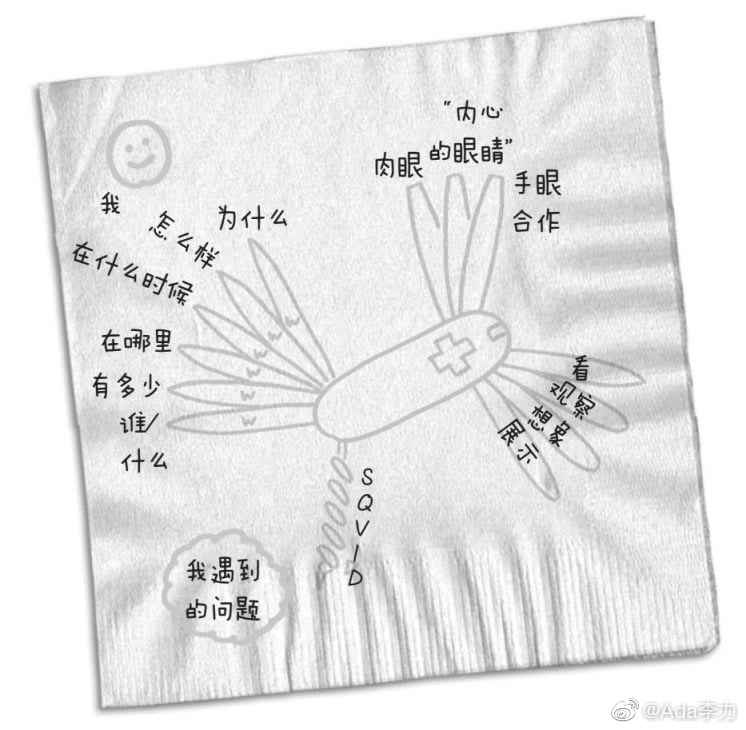

#创业#看到一张瑞士军刀的手绘图，让我想起一些旧事。
以前有个同事非常能干，有个国内的新业务推广，几乎是他靠一个人的力量跑下来的。而且我的观察，他是非常勤奋，非常有上进心的一个人。只是运气似乎一直不太好，离开公司时闹得很不愉快，他的老板对他的评价很低。我觉得他挺倒霉的，碰上这么一个不看业绩的老板。
但是很奇怪，我也不太喜欢他，我通常是很喜欢勤奋上进的同事的。我后来想了想，有两件事给了我这种印象。有次坐飞机，我带了把瑞士军刀，是我姐姐送给我的结婚礼物，还是蛮看重的，但被机场没收了，说一周内还可以取走，之后就会当废品销毁，我想来想去，只有他当时出差还在那个城市，有机会帮我把瑞士军刀取回来，给他打了电话，留了言，拜托这个事情。嗯，他没帮我取，而且也没有任何的回复。估计在他看来这事儿挺不重要的，也不需要给我什么交代。
另外一件事是总部有大领导来北京时，通常都有一个员工见面会兼问答环节，每次他都会提问，提问时他会花很长时间介绍自己是谁，在哪个部门，负责什么事情，然后才是问题，我每次都为他感到很窘，感觉这种行为挺傻的，但似乎很多职场人士把把这种场合当作一个高调曝光自己的时机。
现在回想这件事情，觉得很多初入职场的人，最开始是能够靠能力，获得不同于常人的收益。但是越往上走越需要合作精神。而合作是讲究互利互惠的，一个太过精明的人会把自己所有合作的机会，都给堵死。
我之前也犯过自以为精明的错误呀。
以前有个同事非常能干，有个国内的新业务推广，几乎是他靠一个人的力量跑下来的。而且我的观察，他是非常勤奋，非常有上进心的一个人。只是运气似乎一直不太好，离开公司时闹得很不愉快，他的老板对他的评价很低。我觉得他挺倒霉的，碰上这么一个不看业绩的老板。
但是很奇怪，我也不太喜欢他，我通常是很喜欢勤奋上进的同事的。我后来想了想，有两件事给了我这种印象。有次坐飞机，我带了把瑞士军刀，是我姐姐送给我的结婚礼物，还是蛮看重的，但被机场没收了，说一周内还可以取走，之后就会当废品销毁，我想来想去，只有他当时出差还在那个城市，有机会帮我把瑞士军刀取回来，给他打了电话，留了言，拜托这个事情。嗯，他没帮我取，而且也没有任何的回复。估计在他看来这事儿挺不重要的，也不需要给我什么交代。
另外一件事是总部有大领导来北京时，通常都有一个员工见面会兼问答环节，每次他都会提问，提问时他会花很长时间介绍自己是谁，在哪个部门，负责什么事情，然后才是问题，我每次都为他感到很窘，感觉这种行为挺傻的，但似乎很多职场人士把把这种场合当作一个高调曝光自己的时机。
现在回想这件事情，觉得很多初入职场的人，最开始是能够靠能力，获得不同于常人的收益。但是越往上走越需要合作精神。而合作是讲究互利互惠的，一个太过精明的人会把自己所有合作的机会，都给堵死。
我之前也犯过自以为精明的错误呀。
- 